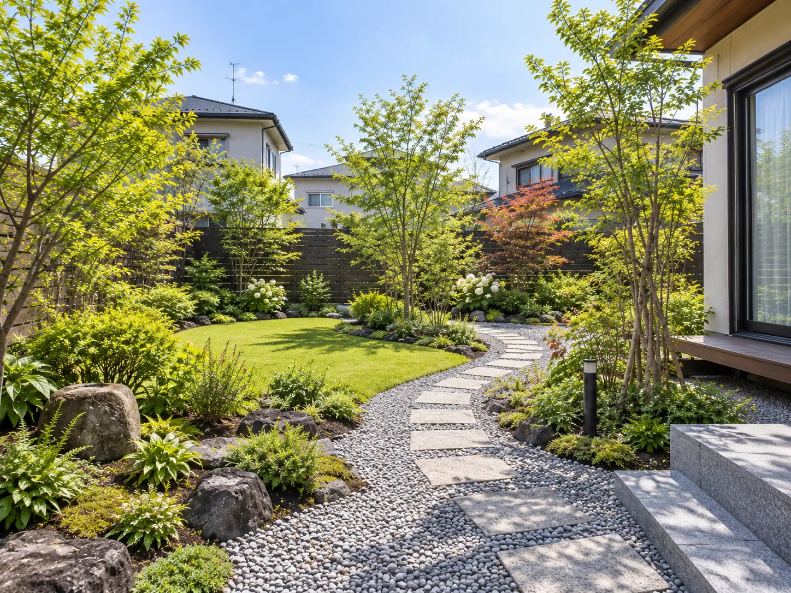
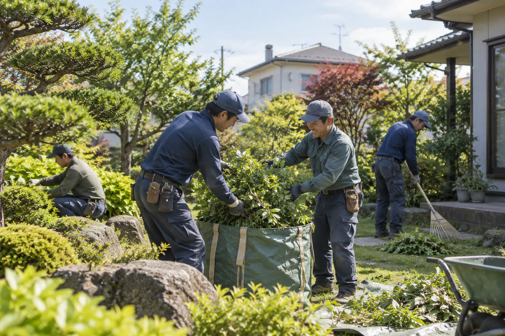
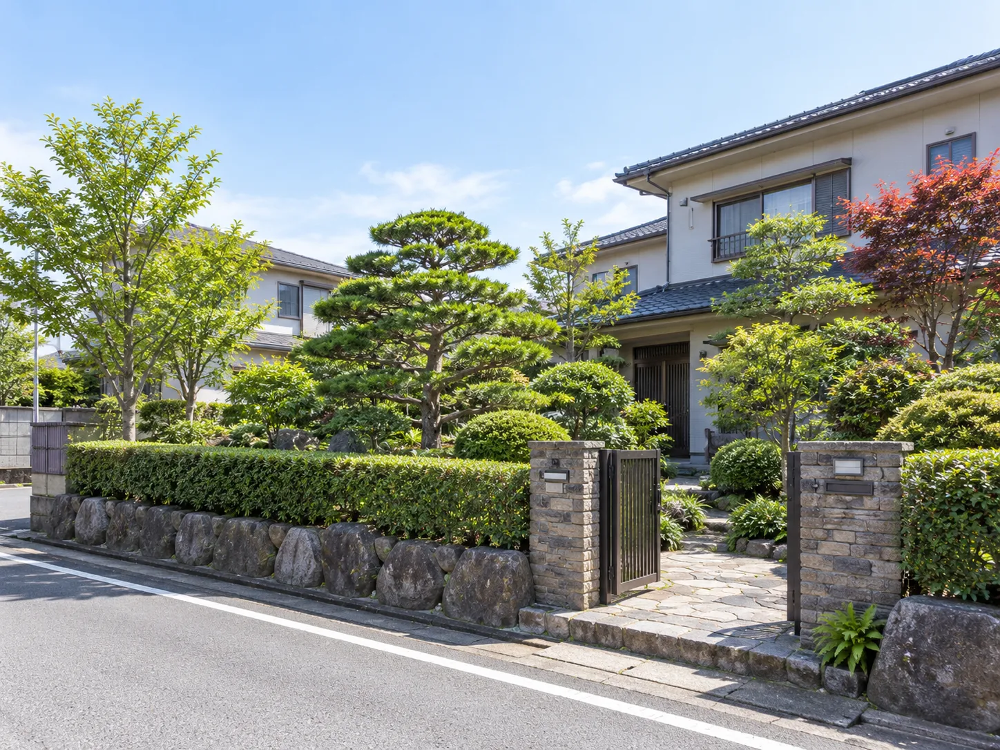
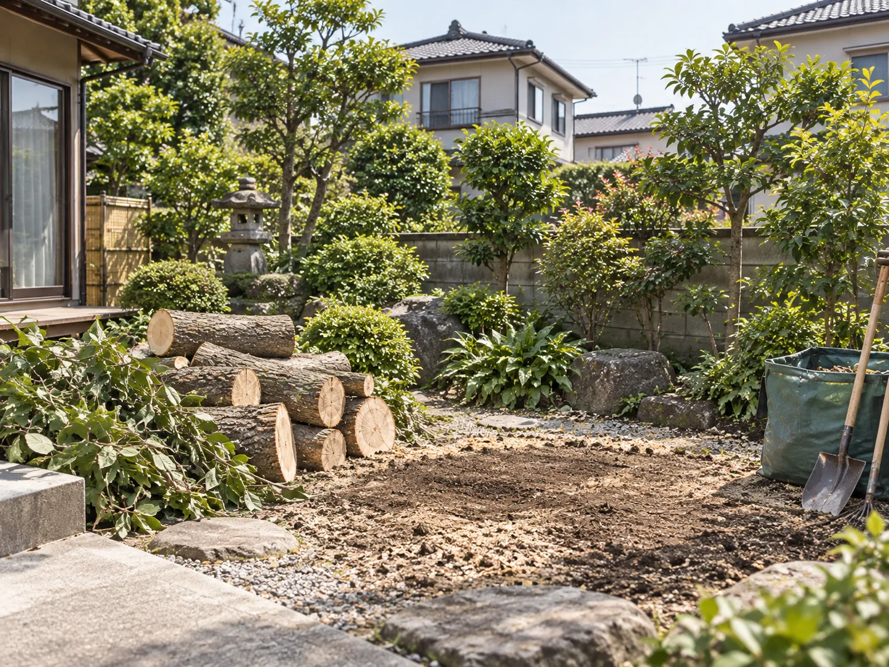
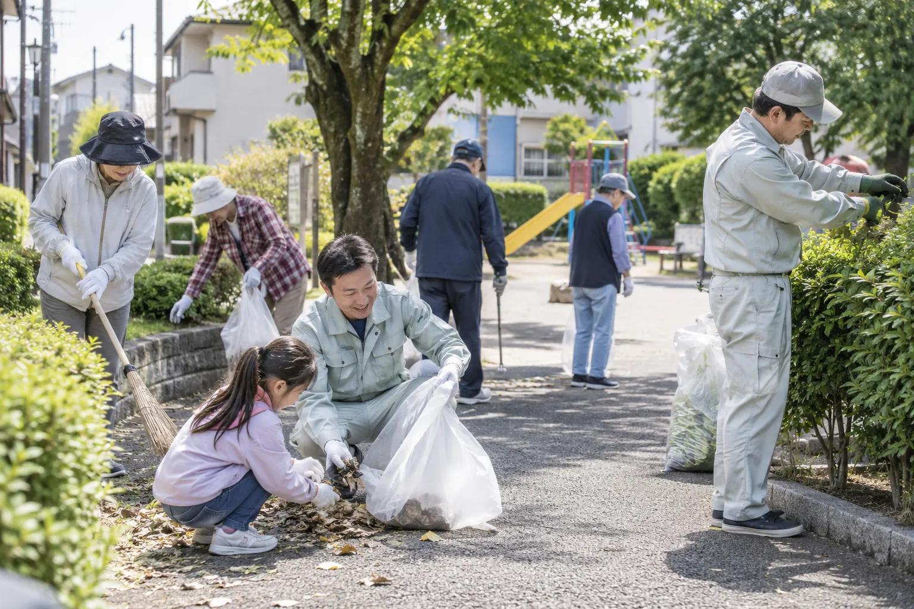
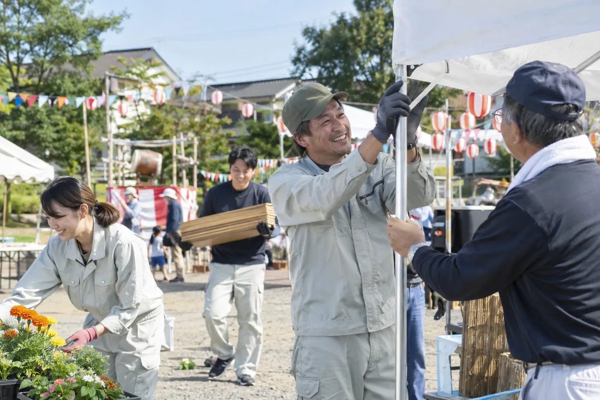
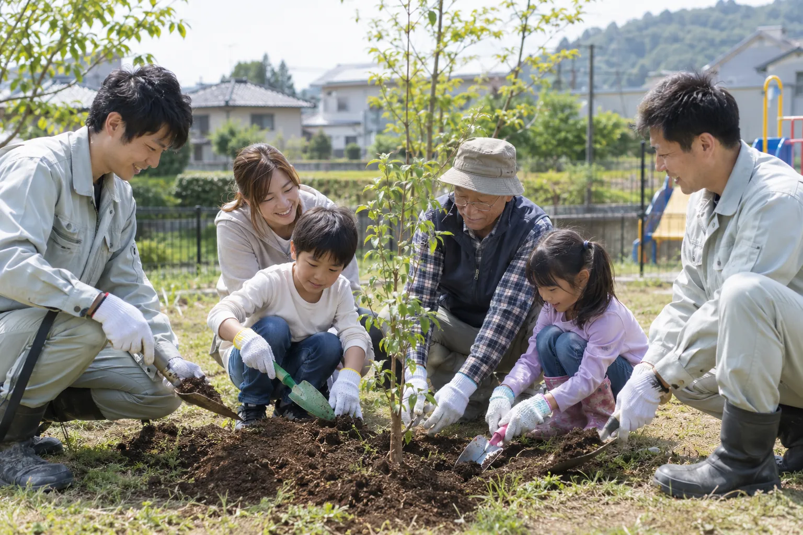

札幌市西区庭リフォーム
使わなくなった庭を、手入れしやすい庭へ
植木を整理し、園路と砂利で歩きやすく。草取りの負担を減らす植栽に切り替えました。
SAPPORO — SINCE 1989 札幌の造園会社 株式会社北翠園
1989年の創業以来、札幌の庭と緑に向き合ってきました。庭木1本の剪定から庭づくり、法人の年間管理まで。これからも、地域の皆さまに気軽に頼っていただける造園会社であり続けます。

About
北翠園は、札幌市を中心に、石狩市・江別市・北広島市など札幌近郊で、造園・庭園管理・外構工事を行う会社です。1989年の創業以来、地域のお客様に支えていただきながら仕事を続けてきました。
約20名のスタッフが在籍し、ベテランの職人から若手まで、幅広い年代が一緒に働いています。庭木1本の剪定から、庭全体のリフォーム、法人・施設の年間管理まで。地域の身近な造園会社として、長く庭を守るお手伝いをしています。
Your Garden
庭木1本から、お気軽にご相談ください。
庭のお悩みを相談するService
庭木1本の剪定から、庭全体のリフォーム、法人・施設の年間管理まで。札幌の気候に合わせて、一年を通して庭を守ります。
木の種類や成長を見ながら、その後の育ち方まで考えて整えます。
大きくなりすぎた木・倒木の危険がある木の伐採・撤去、抜根まで。
新築の庭づくりから、古くなった庭の作り直しまで。
アプローチ・フェンス・花壇・植栽・石材・砂利敷きなど。
剪定・除草・清掃を定期的に。まとめてお引き受けします。
マンション・店舗・企業・病院・福祉施設などの植栽・樹木管理。
北海道の雪と寒さから庭木を守る冬囲い。冬囲いだけのご依頼も。
Works
札幌市とその近郊で手がけた庭仕事の一部です。地域・施工内容とあわせてご紹介しています。

札幌市西区庭リフォーム
植木を整理し、園路と砂利で歩きやすく。草取りの負担を減らす植栽に切り替えました。

札幌市豊平区庭木剪定
道路側にはみ出した枝を整理し、風通しと見通しを確保。翌年からは年1回の剪定でご依頼いただいています。

札幌市北区庭木伐採・抜根
建物や電線に近い高木を、周囲に配慮しながら分割して伐採。切り株の抜根まで行いました。
気になる庭仕事があれば、まず写真を見ていただくところからご相談いただけます。
工事をするか決めていない段階でも問題ありません。
Point
技術のことだけでなく、地域で長く続けてきたこと、人とのつながりを大切にしてきたことが、北翠園の強みです。
Point 01
1989年の創業以来、札幌を中心に造園・庭園管理を続けてきました。地域のお客様から長く依頼をいただいていることが、会社の大きな強みです。
Point 02
施工して終わりではなく、その後の剪定や庭の管理まで長くお付き合いすることを大切にしています。10年以上、継続してご依頼いただいているお客様もいます。
Point 03
ベテランの職人から若手まで、幅広い年代のスタッフが在籍します。大きすぎず小さすぎない規模で、地域のお客様に柔軟に対応できると考えています。
SINCE 1989
1989
創業以来、地域のお客様に支えられてきました。代替わりしても剪定に伺う庭があり、新しく庭を任せてくださる方もいます。これからも、この街の緑を守り続けます。
Community
この街で仕事をさせていただいている会社として、普段から地域の活動にも参加しています。



FAQ
剪定も庭づくりも、年間の管理も。札幌に根ざした造園会社として、庭のことをまとめてお引き受けします。工事をするかどうかは、ご相談のあとで決めていただけます。
受付時間：平日・土 8:00〜18:00／日・祝休み